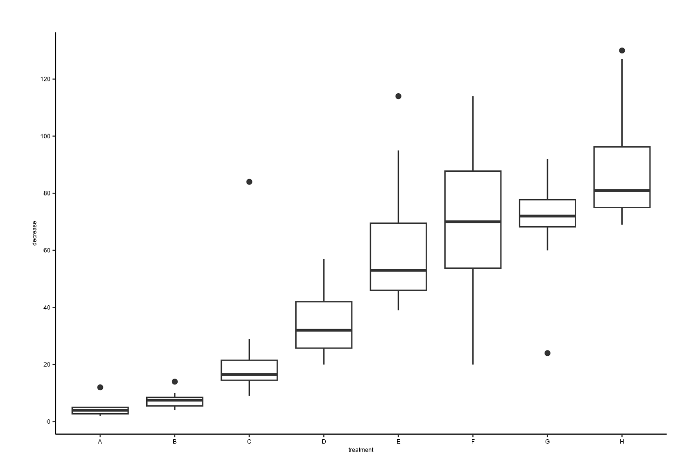
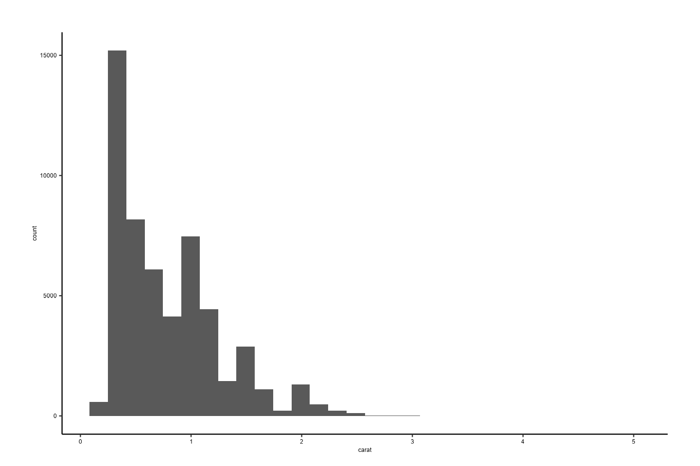
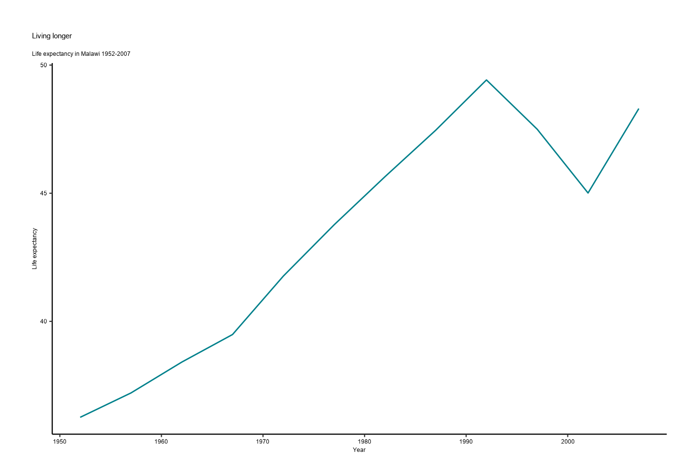
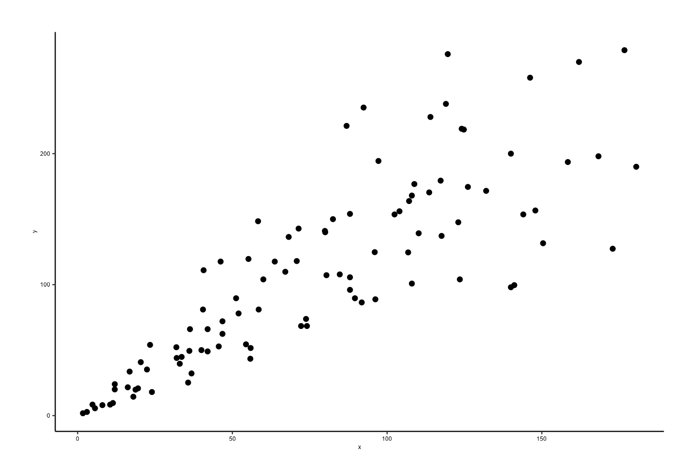
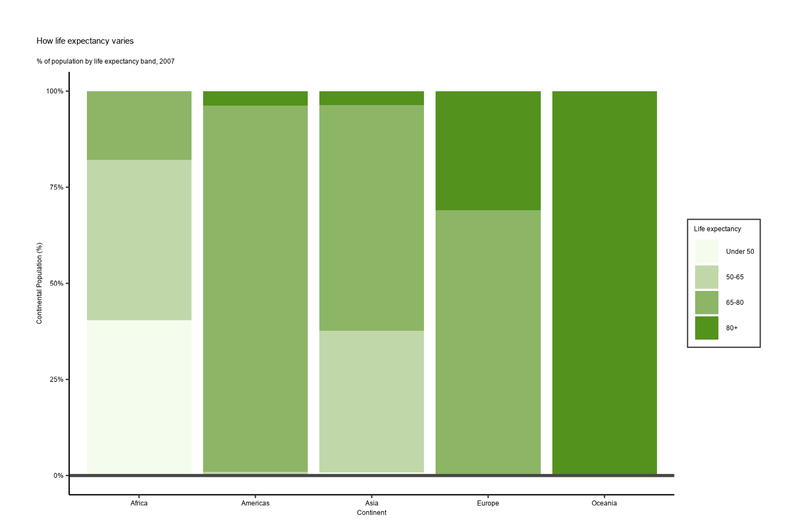

How to Create AAGI Style Graphics and Tables
The CCDM CBADA team has developed an R package, {AAGIThemes}, and this R cookbook to help ease the process of creating publication-ready graphics in our in-house style using R’s {graphics}, {ggplot2} and {flextable} libraries a more reproducible process, as well as making it easier for people new to R to create beautiful graphics and tables that adhere to AAGI style guidelines.
Getting started
Install the {AAGIThemes} package
{AAGIThemes} is not on CRAN, so you will have to install it directly from our GitHub repository using {remotes}.
If you do not have the {remotes} package installed, you will have to run the first line in the code below as well.
if (!require("remotes")) {
remotes::install_github("AAGI-AUS/AAGIThemes",
build_vignettes = TRUE
)
}For more info on {AAGIThemes} check out the package’s GitHub repository, but most of the details about how to use the package and its functions are detailed below.
When you have downloaded the package and successfully installed it you are good to go and create plots and tables.
Creating Tables
Creating AAGI themed tables requires using {flextable}. Using the
airquality data set, and adding a text column to illustrate
how text columns are handled, here’s how to apply an AAGI theme to a
table.
library("AAGIThemes")
library("flextable")
library("dplyr")
#>
#> Attaching package: 'dplyr'
#> The following objects are masked from 'package:stats':
#>
#> filter, lag
#> The following objects are masked from 'package:base':
#>
#> intersect, setdiff, setequal, union
ft <- flextable(head(airquality) |>
mutate(`Month Name` = "May"))
ft <- theme_ft_aagi(ft)
ftOzone |
Solar.R |
Wind |
Temp |
Month |
Day |
Month Name |
|---|---|---|---|---|---|---|
41 |
190 |
7.4 |
67 |
5 |
1 |
May |
36 |
118 |
8.0 |
72 |
5 |
2 |
May |
12 |
149 |
12.6 |
74 |
5 |
3 |
May |
18 |
313 |
11.5 |
62 |
5 |
4 |
May |
14.3 |
56 |
5 |
5 |
May |
||
28 |
14.9 |
66 |
5 |
6 |
May |
On {ggplot2} Plots and Graphs
Most of the focus of {AAGIThemes} is given to supporting {ggplot2} visualisations, but {base} and {graphics} plotting functionality are also supported. The focus is given to {ggplot2} as it is more verbose and efficient in creating data visualization based on “The Grammar of Graphics” (Wilkinson 2012). The layered grammar makes developing charts more structural and easy to interpret (after you know how to use {ggplot2} of course). One of the greatest strengths of {ggplot2} is the ability to customise it so easily. Several themes and colour palettes already exist for {ggplot2} to Create the visualisation look professional and engaging for the end users. {AAGIThemes} leverages the ability to customise the appearance {ggplot2} to create a theme that is clean, easy to use and follows AAGI’s style guidelines including fonts and colours.
When using {AAGIThemes} for graphs, the legend will be placed at the
top by default and the main and sub-titles will be left aligned and
captions will be right aligned. These choices can all be overridden by
using ggplot2::theme() arguments as you wish.
Using {AAGIThemes} to Create Graphical Outputs
{AAGIThemes} provides several functions to assist users in creating plots, charts and graphs with a more unified AAGI style. Following are examples of four major styles of graphs that are commonly used, bar plots, boxplots, histograms and lines and scatter plots.
Bar Plots

Using {ggplot2} to Create a Bar Plot
We need to transform a named vector to a data.frame for
{ggplot2} to be able to use it, so we’ll create a {tibble} first,
islands_df and then plot it.
islands_df <- tibble(name = names(islands), value = islands)
ggplot(data = islands_df, aes(x = name, y = value)) +
geom_col() +
theme_aagi() +
theme(axis.text.x = element_text(angle = 90, hjust = 1))
Although those names are a bit difficult to read on the x-axis, so we can flip the coordinates so that they are easier to read.
ggplot(data = islands_df, aes(x = name, y = value)) +
geom_col() +
theme_aagi() +
coord_flip()
Boxplots
Using Base R to Create a Boxplot
boxplot_aagi(decrease ~ treatment,
data = OrchardSprays,
xlab = "treatment",
ylab = "decrease"
)
Using {ggplot2} to Create a Boxplot
library("AAGIThemes")
library("ggplot2")
ggplot(data = OrchardSprays, aes(x = treatment, y = decrease)) +
geom_boxplot() +
scale_y_continuous(breaks = seq(0, 120, by = 20)) +
theme_aagi()
Histograms
Using Base R to Create a Histogram
library("ggplot2") # for diamonds data set
hist_aagi(diamonds$carat)
#> Warning in plot.window(xlim, ylim, "", ...): "panel.first" is not a graphical
#> parameter
#> Warning in title(main = main, sub = sub, xlab = xlab, ylab = ylab, ...):
#> "panel.first" is not a graphical parameter
#> Warning in axis(1, ...): "panel.first" is not a graphical parameter
#> Warning in axis(2, at = yt, ...): "panel.first" is not a graphical parameterUsing {ggplot2} to Create a Histogram
ggplot(data = diamonds, aes(x = carat)) +
geom_histogram() +
theme_aagi()
#> `stat_bin()` using `bins = 30`. Pick better value with `binwidth`.
Line Graphs
Using the {gapminder} data, we can make the following figure of life expectancy over time in Malawi with the line in AAGI’s turquoise colour.
Using Base R to Create a Line Graph
# Data for chart from {gapminder} package
line_df <- gapminder |>
filter(country == "Malawi") |>
arrange(year)
plot_aagi(
x = line_df$year,
y = line_df$lifeExp,
col = AAGIPalettes::colour_as_hex("AAGI Teal"),
type = "l",
main = "Living longer",
xlab = "Year",
ylab = "Life expectancy",
sub = "Life expectancy in Malawi 1952-2007"
)Using {ggplot2} to Create a Line Graph
ggplot(line_df, aes(x = year, y = lifeExp)) +
geom_line(colour = AAGIPalettes::colour_as_hex("AAGI Teal")) +
theme_aagi() +
ylab("Life expectancy") +
xlab("Year") +
labs(
title = "Living longer",
subtitle = "Life expectancy in Malawi 1952-2007"
)
Scatterplots
# Create data
data <- data.frame(
x = seq(1:100) + 0.1 * seq(1:100) * sample(c(1:10), 100, replace = TRUE),
y = seq(1:100) + 0.2 * seq(1:100) * sample(c(1:10), 100, replace = TRUE)
)Using {ggplot2} to Create a Scatterplot
ggplot(data = data, aes(x = x, y = y)) +
geom_point() +
theme_aagi()
Colours in {AAGIThemes}
AAGI Colours
{AAGIThemes} imports official AAGI colours for use in plots and also applies them to {ggplot2} facet strips and uses them in the MS Word and PowerPoint templates for colour matching in the outputs from {AAGIPalettes}.
library(AAGIPalettes)
display_aagi_cols("aagi_colours")Using AAGI Colours
We’ve already seen above in the line graph example how to use the colours in a graph. But for further demonstration, here are a few more examples.
Here we’ll again use the {gapminder} data to construct a stacked bar
chart and use AAGI’s colours in scale_fill_manual().
# prepare data
stacked_df <- gapminder |>
filter(year == 2007) |>
mutate(lifeExpGrouped = cut(
lifeExp,
breaks = c(0, 50, 65, 80, 90),
labels = c("Under 50", "50-65", "65-80", "80+")
)) |>
group_by(continent, lifeExpGrouped) |>
summarise(continentPop = sum(as.numeric(pop)))
#> `summarise()` has grouped output by 'continent'. You can override using the
#> `.groups` argument.
# set order of stacks by changing factor levels
stacked_df$lifeExpGrouped <- factor(stacked_df$lifeExpGrouped,
levels = rev(levels(stacked_df$lifeExpGrouped))
)
# create plot
ggplot(
data = stacked_df,
aes(
x = continent,
y = continentPop,
fill = lifeExpGrouped
)
) +
geom_bar(
stat = "identity",
position = "fill"
) +
scale_fill_manual(
name = "Life expectancy",
values = aagi_palettes(n = 4, name = "aagi_greens")
) +
ylab("Continental Population (%)") +
xlab("Continent") +
theme_aagi() +
scale_y_continuous(labels = scales::percent) +
geom_hline(
yintercept = 0,
linewidth = 1,
colour = "#474747"
) +
labs(
title = "How life expectancy varies",
subtitle = "% of population by life expectancy band, 2007"
) +
guides(fill = guide_legend(reverse = TRUE))
Advanced Uses
Using {ggplot2} Faceting
As we’ll be using this figure for the next example, we’ll generate an
object in R called p and save it to R’s
tempdir() for use in the next example as well.
# Prepare data
facet <- gapminder |>
filter(continent != "Americas") |>
group_by(continent, year) |>
summarise(pop = sum(as.numeric(pop)))
#> `summarise()` has grouped output by 'continent'. You can override using the
#> `.groups` argument.
col_values <- c(
AAGIPalettes::colour_as_hex("AAGI Teal"),
AAGIPalettes::colour_as_hex("AAGI Green"),
AAGIPalettes::colour_as_hex("AAGI Yellow"),
AAGIPalettes::colour_as_hex("AAGI Blue")
)
# Make plot
p <- ggplot() +
geom_area(data = facet, aes(x = year, y = pop, fill = continent)) +
scale_fill_manual(values = col_values) +
facet_wrap(~continent, ncol = 5) +
scale_y_continuous(
breaks = c(0, 2000000000, 4000000000),
labels = c(0, "2bn", "4bn")
) +
theme_aagi() +
geom_hline(
yintercept = 0,
linewidth = 1,
colour = "#474747"
) +
theme(legend.position = "none", axis.text.x = element_blank()) +
labs(title = "Asia's rapid growth", subtitle = "Population growth by continent, 1952-2007")
ggsave(p, filename = "AAGI.png", path = tempdir())
#> Saving 7.5 x 5 in image
print(p)Adding the AAGI Logo to Your Figures
Add the AAGI logo to the upper left of the previous plot as per the
style guide. Use the add_aagi_logo() function to add the
logo automatically to a previously saved image file. In this case, the
previous example used to show the faceting colours has been saved to R’s
tempdir(). You can save using tempdir() as
illustrated above or save on your Documents folder or elsewhere and
access it from there as well. The image is resized to be 600x1000 pixels
before being displayed here. Feel free to adjust as necessary.
library(magick)
add_aagi_logo(
file_in = file.path(tempdir(), "AAGI.png"),
file_out = file.path(tempdir(), "AAGI_logo.png")
)
image_read(file.path(tempdir(), "AAGI_logo.png")) |>
image_resize("600x1000") |>
print()
#> # A tibble: 1 × 7
#> format width height colorspace matte filesize density
#> <chr> <int> <int> <chr> <lgl> <int> <chr>
#> 1 PNG 600 480 sRGB FALSE 0 118x118
Saving {ggplot2} Figures
When saving figures generated with {ggplot2} that use {AAGIThemes} as
the theme, PDFs will not properly embed the Proxima Nova font that is
used. In order for you to save your figures and preserve the font, you
can either save as a .png file or use the device option in
ggsave(), which is demonstrated as follows.
ggsave(
filename = "cairo_font.pdf",
plot = p,
device = cairo_pdf,
path = tempdir()
)
#> Saving 7.5 x 5 in imageCairo Instructions for macOS
You should already have the Cairo graphics library installed when you
install R, unless you use the Homebrew version, e.g.,
brew install r. You can verify that you have Cairo support
by running the capabilities() function; TRUE
should show up under cairo:
capabilities()
#> jpeg png tiff tcltk X11 aqua
#> TRUE TRUE TRUE TRUE FALSE FALSE
#> http/ftp sockets libxml fifo cledit iconv
#> TRUE TRUE FALSE TRUE FALSE TRUE
#> NLS Rprof profmem cairo ICU long.double
#> TRUE TRUE TRUE TRUE TRUE TRUE
#> libcurl
#> TRUEIf you do not see TRUE under “cairo”, check that you’ve
installed a version of R using the Homebrew cask, different than
brew install r, this installs the vanilla version of R as
built by the R team or using rig, https://github.com/r-lib/rig, to manage your R
installation if you’re not just installing the default R binary.
So, you should not need to install any R-specific Cairo libraries or anything for this to work. However, you will need an X11 window system first, like XQuartz. You can install XQuartz like so.